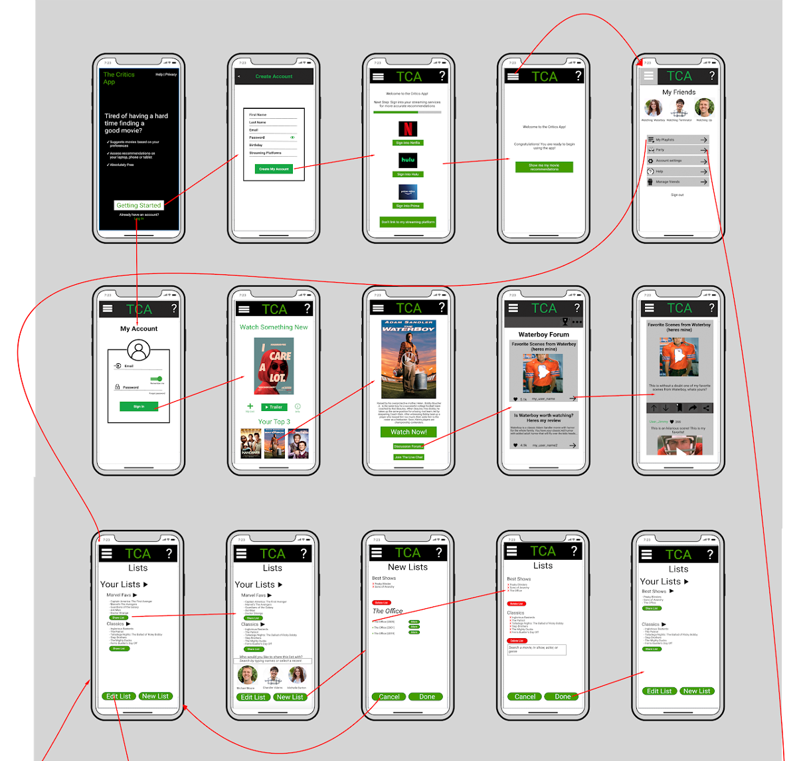
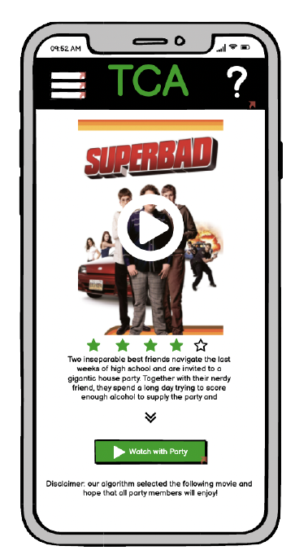

What did we learn from the interviews?
We understood behaviour patterns of our target audience like importance of ratings, trailers, crew members, genres, and recommendations.
Did we change our focus?
We found out that watch movies was more of a social activity and users would not mind watching movies they dont like. This led to introducing a community build aspect to the application providing an avenue for social interactions with people with similar interests.
Next, we created four product concepts prototypes based on Ideation Process. The first step of the ideation process is a list of Hot ideas and issues were constructed from our interview notes, diagrams, and affinity models. Vissions were made of how these Hot Ideas would be applied using the relationship model.
Persona's and Story Boards
Person's are a great way to understand how different users will interact with our system. Using these persona's, scenario's were created how each persona would interact with the system. StoryBoards provide a graphical representation of these scenario's of the application. StoryBoard That was used to create the use cases. Lastly, Wireframes were created in balsamiq with the help of the product concepts generated.
Wireframes/Transition Network


Wireframe Features - Party/Tie breaker

Once all Wireframes were done we conducted Think Aloud Tests with stakeholders and Usability Testing using Jacob Neilsons Hueristics. Usability testing was carried out by our entire team as well as classmates.
The identified issues were then implemented to inculcate seamless functionality.
Wireframing Tools


What did I learn ?
Teamwork
Brainstorming gets better ideas on the table and makes solutioning an easier process.
Contextual Inquiry is important
Interpretation session led to a deeper understanding our users which I felt was one of the mos important step in this project.